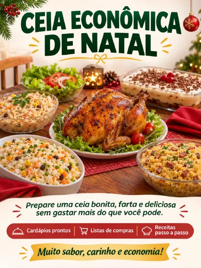
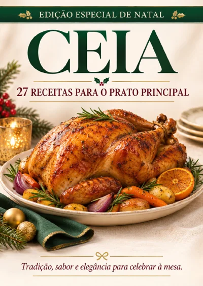
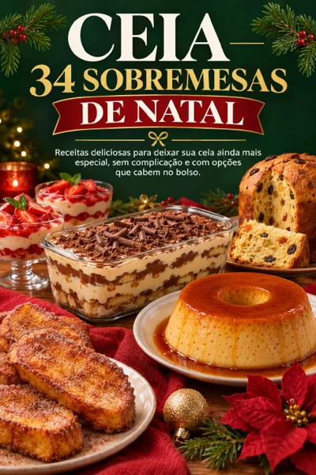
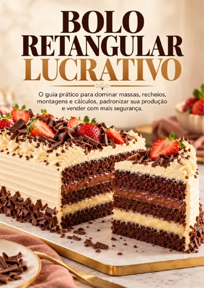
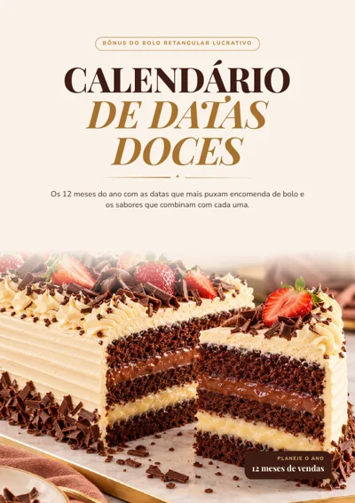
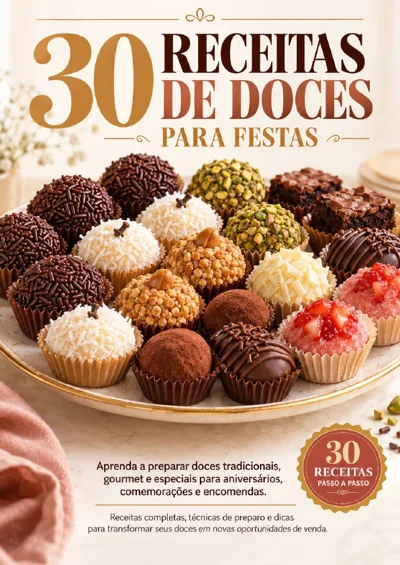

Ceia Econômica de Natal
80 páginas com cardápios por orçamento, listas de compras, receitas passo a passo com fotos e um kit de organização para o grande dia.

Ceia: 27 Receitas para o Prato Principal
Carnes bovinas, assados suínos, aves, peixes e bacalhau para o centro da mesa, com rendimento, cronograma da ceia e guia de porções.

Ceia: 34 Sobremesas de Natal
Sobremesas de travessa e geladas, rabanadas, cremosas e tortas, bolos e biscoitos natalinos, panetones e chocotones.

Bolo Retangular Lucrativo
90 páginas sobre massas, recheios, montagem e coberturas, com tabelas de rendimento e um módulo de precificação.

Calendário de Datas Doces
16 páginas com as datas que mais puxam encomendas em cada mês do ano e os sabores que combinam com cada uma.

30 Receitas de Doces para Festas
50 páginas com docinhos clássicos, gourmet e frutados, passo a passo com fotos e um módulo sobre produção, preço e vendas.
Os 6 arquivos somam cerca de 130 MB. Se puder, baixe no Wi-Fi.
Por onde começar
- 1Comece pela Ceia Econômica de Natal. Defina seu orçamento e conte quantas pessoas vêm.
- 2Escolha o cardápio no Módulo 02: econômico, tradicional ou caprichado.
- 3Quer variar o cardápio? Veja as 27 Receitas de prato principal e as 34 Sobremesas antes de fechar o cardápio.
- 4Faça a lista de compras com antecedência e compre só o que falta em casa.
- 5Abra o Calendário de Datas Doces para ver as próximas datas do ano e os sabores que combinam com cada uma.
- 6Teste uma receita por vez do Bolo Retangular ou dos 30 Doces, começando em pequena quantidade.
Antes de ir ao mercado
Os preços dos cardápios são uma referência e mudam conforme a cidade e a semana. Compare valores no seu mercado e confira o que você já tem em casa. Em caso de alergias ou restrições alimentares, verifique os rótulos e as substituições sugeridas.